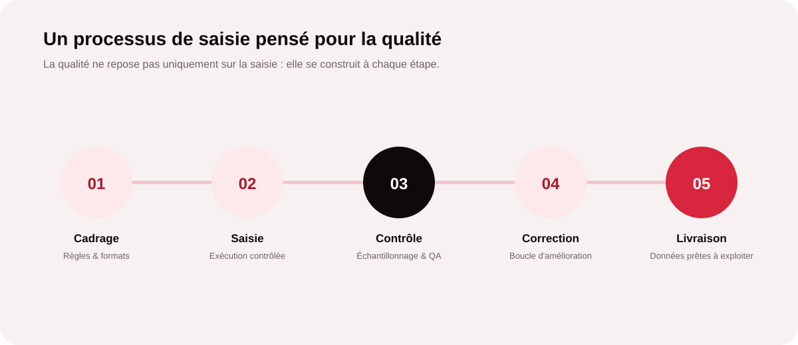
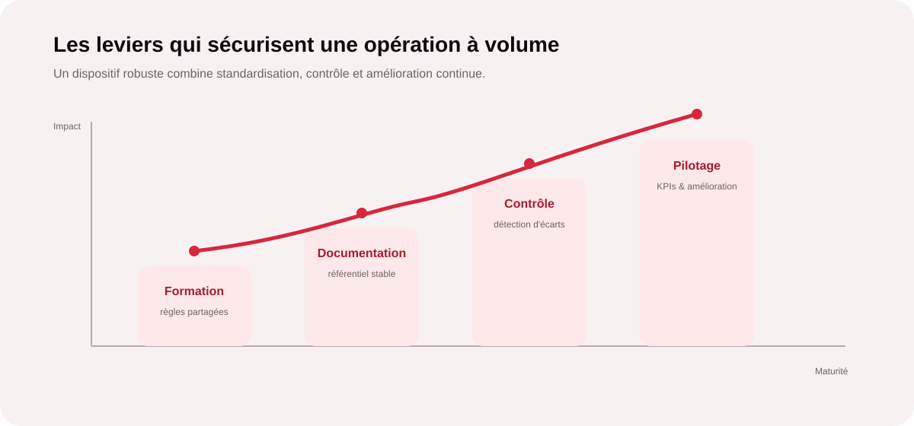

Pourquoi la saisie de données devient un enjeu opérationnel
Catalogues produits, formulaires, CRM, bases clients, documents administratifs, marketplaces ou fichiers Excel : les entreprises manipulent chaque jour de grandes quantités d’informations. Lorsque la saisie reste réalisée au fil de l’eau par des équipes déjà mobilisées sur leur cœur de métier, elle consomme du temps et augmente le risque d’erreurs.
Le sujet n’est donc pas uniquement le coût d’une saisie. Une donnée mal renseignée peut provoquer une relance inutile, un doublon, une information client erronée ou une rupture dans un processus aval. À l’inverse, une saisie structurée et contrôlée permet de gagner du temps tout en améliorant la fiabilité des opérations.

1. Standardiser le processus avant de produire
La première source de qualité est la clarté des consignes. Avant de lancer une opération à volume, il faut définir précisément les champs à renseigner, les formats attendus, les valeurs autorisées, les règles de nommage et les cas particuliers. Cette phase de cadrage évite que chaque opérateur interprète différemment une même information.
Un guide opératoire peut par exemple préciser comment traiter une adresse incomplète, quelle convention utiliser pour les numéros de téléphone, comment détecter un doublon ou quoi faire lorsqu’une donnée source est illisible. Les exceptions sont ainsi traitées de manière homogène.
2. Contrôler la qualité à plusieurs niveaux
La qualité ne doit pas être vérifiée uniquement à la fin. Un dispositif professionnel combine des contrôles à différents moments : validation des formats pendant la saisie, contrôles automatiques lorsque cela est possible, échantillonnage qualité et revue des anomalies.
| Niveau de contrôle | Ce qu’on vérifie | Objectif |
|---|---|---|
| Pré-saisie | Consignes, sources, formats et champs obligatoires. | Éviter les ambiguïtés avant production. |
| Pendant la saisie | Formats, cohérence des valeurs, doublons évidents. | Bloquer les erreurs au plus tôt. |
| Contrôle qualité | Échantillons, respect des règles et exactitude. | Mesurer la fiabilité réelle du traitement. |
| Post-production | Anomalies récurrentes et corrections. | Améliorer le processus pour les lots suivants. |
3. Documenter pour rendre la qualité reproductible
Une opération de saisie à volume ne doit pas dépendre de la mémoire d’une personne. La documentation transforme le savoir-faire en méthode transmissible. Elle doit être concise, actualisée et facilement accessible aux personnes qui produisent et contrôlent.
- Référentiel de règles : définitions, formats, conventions et exemples.
- Procédure d’escalade : que faire lorsqu’un cas ne correspond pas aux règles ?
- Jeu d’exemples : cas corrects, erreurs fréquentes et cas limites.
- Versioning : historique des évolutions pour éviter les consignes contradictoires.
- Critères qualité : indicateurs et seuils utilisés pour accepter ou corriger un lot.
Vous avez un volume de données à traiter ?
MinoSeo peut prendre en charge vos opérations de saisie avec un processus documenté, des contrôles qualité et un suivi adapté à votre activité.
Échanger sur votre projet4. Gérer le volume sans perdre la maîtrise
Lorsque les volumes augmentent, le réflexe peut être de multiplier les opérateurs. Or, sans organisation, plus de capacité peut aussi signifier plus d’écarts. La priorité consiste à créer une chaîne de production homogène : répartition claire des tâches, lots contrôlables, points de contrôle et responsable de la qualité.
La segmentation est particulièrement utile. Un lot peut être défini par période, type de document, catégorie produit ou source. Cette approche facilite le suivi et permet d’identifier rapidement l’origine d’une anomalie au lieu de remettre en cause l’ensemble de la production.
5. Les quatre leviers qui sécurisent une opération à volume

La formation garantit que les règles sont comprises. La documentation stabilise les décisions. Le contrôle détecte les écarts. Le pilotage transforme les résultats en actions d’amélioration. Ces leviers sont complémentaires : une excellente procédure ne suffit pas si elle n’est pas appliquée et mesurée.
Quels indicateurs suivre ?
Le pilotage doit rester simple et directement relié à l’objectif métier. Selon la nature du projet, MinoSeo peut suivre notamment le volume traité, le taux d’erreur constaté sur échantillon, le taux de reprise, le respect des délais et la productivité par lot.
Le bon indicateur n’est pas nécessairement celui qui pousse à produire le plus vite. Une productivité élevée accompagnée d’un taux de reprise important peut coûter davantage à l’entreprise qu’un rythme légèrement inférieur mais stable. L’enjeu est donc de rechercher le meilleur équilibre entre capacité, qualité et délai.
Pourquoi externaliser la saisie de données ?
Externaliser permet de transférer une activité répétitive vers une équipe organisée pour ce type de production, tout en laissant les équipes internes se concentrer sur les tâches à plus forte valeur ajoutée. Cela peut être particulièrement pertinent lors d’un pic d’activité, d’une migration de données, d’un enrichissement de base ou d’un traitement récurrent.
Une externalisation bien cadrée ne signifie pas perdre le contrôle. Au contraire, elle permet de formaliser les règles, de définir les niveaux de qualité attendus et de mettre en place un reporting régulier. Le prestataire devient alors une extension opérationnelle de l’entreprise, avec des objectifs et des critères mesurables.
Les prestations de saisie de données de MinoSeo
Depuis plus de 15 ans, MinoSeo accompagne les entreprises dans des opérations BPO où la régularité, la précision et la capacité de production sont essentielles. Notre approche associe processus, équipes formées, contrôle qualité et pilotage afin de sécuriser les traitements à volume.
- Saisie et mise à jour de bases de données.
- Intégration et enrichissement de catalogues produits.
- Traitement de formulaires et documents.
- Nettoyage, normalisation et contrôle de données.
- Gestion de fichiers Excel et opérations administratives structurées.
- Traitements récurrents ou campagnes ponctuelles à volume.
Besoin de capacité sans alourdir vos équipes ?
Décrivez-nous votre volume, vos sources et vos contraintes. Nous pouvons définir un dispositif de saisie adapté à vos objectifs de qualité et de délai.
Demander une étudeGagner du temps, oui. Mais avec une qualité maîtrisée.
Une opération de saisie performante ne se résume pas au nombre de lignes traitées. Sa valeur dépend de la capacité à produire des données fiables, homogènes, documentées et prêtes à être exploitées. Le processus, les contrôles et la documentation sont donc aussi importants que la capacité de production.
Pour les entreprises qui souhaitent réduire la charge des tâches répétitives sans sacrifier la qualité, l’externalisation peut apporter une réponse simple et scalable. Avec plus de 15 ans d’expérience en Data BPO, MinoSeo peut prendre en charge tout ou partie de vos opérations et construire un dispositif adapté à vos volumes.
Transformez vos volumes de saisie en opérations maîtrisées
Parlez-nous de vos données, de vos délais et de vos exigences qualité. MinoSeo vous accompagne pour construire un processus fiable et scalable.
Parler à un expert Data BPO